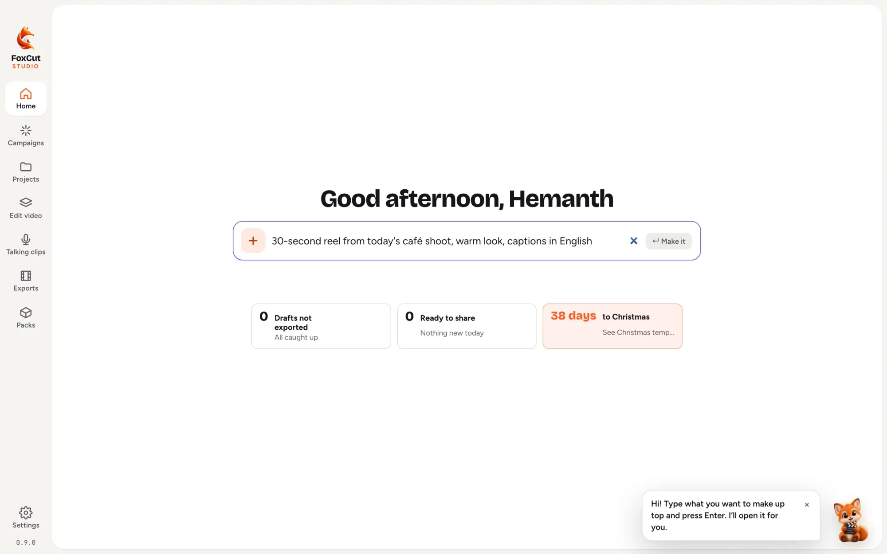
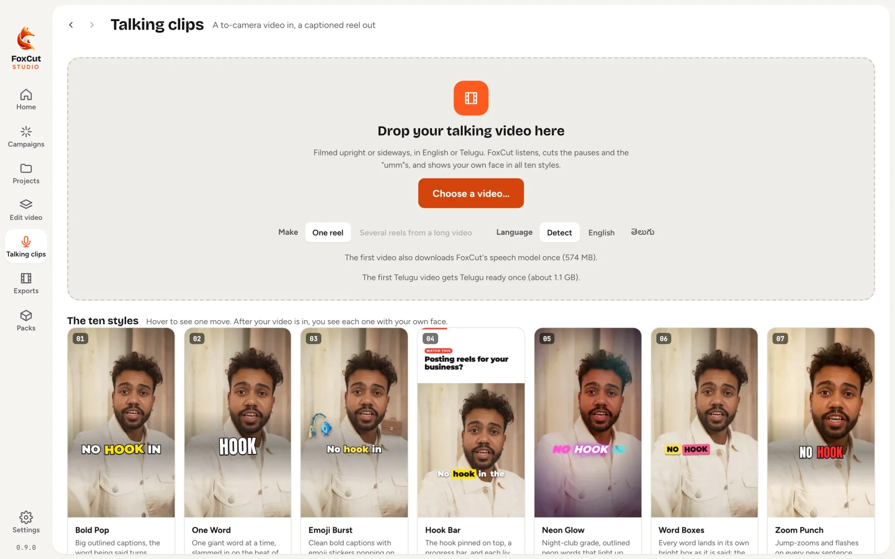
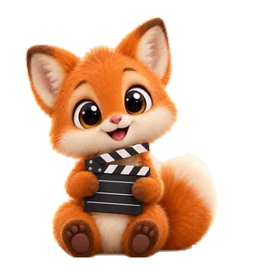
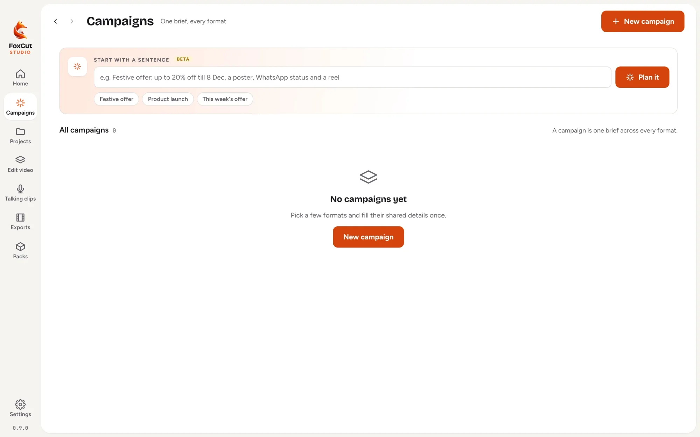

FoxCut
A desktop video studio for Mac and Windows.
Type what you want to make, or drop in your footage. FoxCut cuts talking clips, reels and wedding films, and exports them sized for each platform.
Early access·Updates itself macOS 13 or later on Apple silicon·Windows

Talking clips. A to-camera video in, a captioned reel out.
Drop a talking video. FoxCut listens, cuts the pauses and the “umm”s, and shows your own face in all ten caption styles.
01 / 10
Bold Pop
Big outlined captions. The word being said turns yellow.
Upright or sideways
Drop it in the way you filmed it.
English or Telugu
Pick the language, or let FoxCut detect it.
On your computer
Speech is transcribed on your own computer. The speech model downloads once.
One reel or several
One reel, or several reels from a long video.

Edit video. Footage in, a first cut out.
Pick what you’re making and drop in every clip from the shoot. FoxCut keeps the best moments, leaves the rest in the bin, and hands you a first cut.

Talking clip
A to-camera video or podcast. Pauses, fillers and repeated lines come out; captions go in.
Reel
Many clips cut to music: the best moments, every cut on the beat.
Wedding film
A highlight film in chapters, cut to music, keeping the moments that matter.
Choose the music, the transitions and the length: 15 s, 30 s or 1 min. Fast proxies keep 4K footage smooth while you work.
Type what you want to make.
Home has one bar. Type a request and press Enter, and Foxy, the editor built into FoxCut, opens it. Ask in plain words.
You ask
30-second reel from today’s café shoot, warm look, captions in English
Foxy plans the cut
and shows you the plan.
Then it edits
Only after you’ve seen the plan.

“Hi! Type what you want to make up top and press Enter. I’ll open it for you.”
For brand work. Packs, Campaigns, Approvals and Exports.

Packs
Each brand’s templates, fonts, logos and music in one pack. Templates download from the cloud one at a time, with previews, and update quietly.
Campaigns Beta
One brief, every format. Fill the shared details once, then pick the formats: a festive offer, a product launch, this week’s offer.
Approvals
Drafts wait in an approvals queue, so nothing goes out before the brand signs off.
Exports
Exports run one at a time, so the computer stays quick. Sizes for each platform: 9:16 reels, square posts, wide films.
Made for brands, and the people who make their videos.
Brands and distributors
Every brand in its own pack. Drafts wait for sign-off.
Marketing agencies
One brief across every format, for each brand you run.
Photo and video studios
Wedding films in chapters, reels on the beat, 4K on fast proxies.
Creators
Talking clips in English or Telugu, captioned in ten styles.
FoxCut is in early access.
Tell us what you make and who it’s for.
- Mac
- macOS 13 or later on Apple silicon
- Windows
- Windows desktop app
- Updates
- FoxCut updates itself
- Speech
- Transcribed on your computer